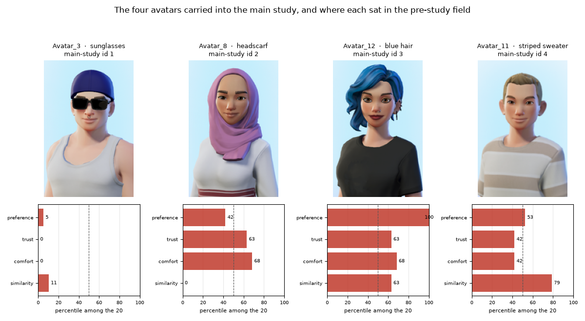
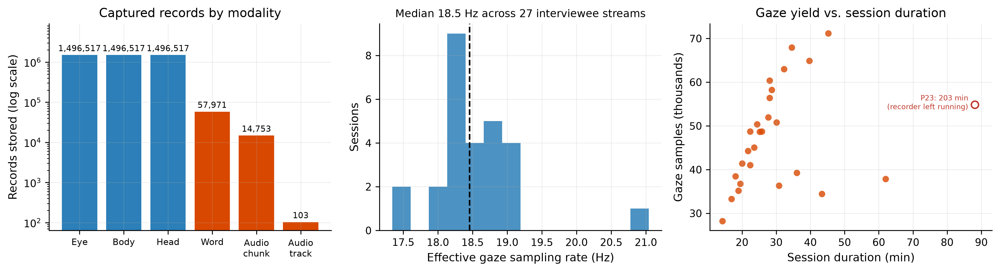
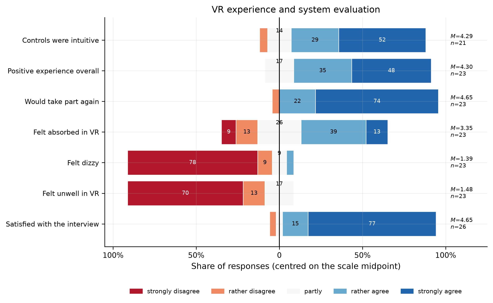

Studies¶
Two studies are complete: an online pre-study that selected the interviewer avatars, and the VR interview study that evaluated the platform.
The instrument works, and it measures things a conventional survey cannot see. The behavioural effects it reveals are real but modest at n = 27, and are reported here with their confounds and their nulls intact.
Study 1: The avatar pre-study¶
Fielded 6–24 June 2025. 99 of 115 respondents completed it, rating 20 avatars on preference, trust, comfort and similarity. None took part in the interviews.
Four avatars went into the main study. They were not the four best-rated: they were chosen to span most of the preference range, so that avatar effects could be looked for at all.

No causal claim about avatars
Interviewer avatar was not randomised across the 27 interviews, and the interviewee set is a different, unbalanced subset. The pre-study establishes how the avatars were perceived by an independent sample; it does not license a causal claim in the main study.
Study 2: The VR interview study¶
Twenty-seven interviews at two institutions. Interviewers and interviewees had never met. Each ran about 20 minutes of questionnaire inside a median 27.7-minute session, including two personality batteries used as the experimental contrast: neutral (QN) and discomfort-inducing (QD).
What the instrument captured¶

| Valid interviews | 27 (of 34 recorded) | Total records stored | 4,567,743 |
| Total interview time | 15.7 h | Median gaze rate | 18.5 Hz |
| Eye / body / head records | 1,496,517 each | Capture duty cycle | 0.966 |
| Transcribed words | 57,971 | Gaze in reference view | 97.0 % |
A duty cycle of 0.966 means capture is continuous for essentially the whole session. This is the claim everything else rests on, and the one we can make most firmly.
Acceptance¶

Answer format¶
The cleanest result in the study, and the one most likely to matter elsewhere. The answer options were displayed on the desk panel, numbered, and never read aloud.
Two things follow. Since the indices were only ever visible, a participant could produce one only by reading the panel and folding it into their answer: the interface demonstrably changes response behaviour, and interviewers unanimously reported that displaying the options helped the interview flow.
And 63 % of spoken answers contain no verbatim scale label. A voice-driven questionnaire therefore cannot match on label text; it has to resolve a bare index against whatever scale is displayed, and fall back to a clarification turn for the 27 % that give neither form. That constraint generalises well beyond VR.
Index usage does not differ between neutral and sensitive items (W = 70.0, p = .758); it is a property of the interface, not of question sensitivity.
Gaze¶
Gaze is resolved by replaying captured eye tracking into the Unity scene and raycasting against the actual colliders, so "looked at the answer panel" is a measurement rather than an inference from a 2D projection.
Where people look barely moves. No area-of-interest dwell shift survives correction for multiple comparisons (n = 26, all Holm p = 1.0); the largest raw shift is toward the window (+0.026, p = .162), with the answer panel, self-view mirror and interviewer's face all essentially flat.
How people look does move.
| Metric | QN | QD | p | Holm |
|---|---|---|---|---|
| Fixation time share (s/s) | 0.628 | 0.583 | .008 | .040 |
| Mean fixation duration (s) | 0.338 | 0.289 | .029 | .117 |
| Fixations per second | 1.790 | 1.817 | .940 | 1.0 |
| Gaze dispersion (deg) | 13.14 | 14.61 | .745 | 1.0 |
Fixation time share is the one metric that survives Holm correction across the fixation family (dz = −0.64): under sensitive questions participants spend a smaller fraction of their time in fixation, shifting toward slightly longer, less frequent fixations. Spatial entropy is also higher under sensitive items (2.98 → 3.17, p = .018, n = 20): participants scan more of the scene rather than staring more widely.
Response latency¶
Sensitive items are answered 0.42 s more slowly at the median (2.73 s vs 2.31 s), but this is not a reliable effect and the design cannot make it one (Mann-Whitney p = .210).
The confound, stated plainly
The batteries are not interleaved: every neutral item precedes every sensitive one, so item identity explains 99.3 % of the variance in interview position. Question type, position and item are very nearly the same variable. Under participant-clustered inference neither term is reliable: sensitivity ×0.89 (p = .613), position ×1.48 (p = .143), with the model's sensitivity estimate pointing in the opposite direction from the raw comparison. We therefore claim no latency effect of either kind. Interleaving the batteries is the fix, and belongs in the next study.
Speech shows the same shape: responses to sensitive items run longer (1.51 s → 2.02 s, p = .025), but the effect does not survive correction.
Behaviour against self-report¶
The finding that most directly justifies building the instrument.
Asked directly afterwards, only 10 of 27 respondents (37 %) said any question had made them uncomfortable. Those 10 differ sharply from the other 17:
| Measure | Claimed discomfort | Did not | d | Holm p |
|---|---|---|---|---|
| Δ response duration | +1.00 s | 0.00 s | 1.76 | .0014 |
| Δ interviewer-face dwell | +0.005 | 0.000 | 0.73 | .037 |
| Δ median latency, latency ratio, Δ mirror dwell | n/a | n/a | n/a | n.s. |
Both surviving effects are substantial. But the crucial observation is the other half: the same behavioural shifts appear in participants who reported no discomfort at all. Self-report and behaviour converge only partially, so if those shifts index discomfort, self-report alone substantially underestimates the impact of sensitive questions, plausibly through social-desirability reluctance. That is precisely the gap a multimodal interview environment exists to close.
A separate analysis, not to be confused with this one
Correlating behavioural shifts against the five post-interview Likert items gives 25 rank correlations, none of which survive Holm correction. At n = 27 the intervals are wide enough to contain moderate effects, so that is an absence of demonstrated convergence, not demonstrated independence: a different question from the group comparison above.
Reproducibility¶
Every figure and number here comes from an analysis package that regenerates end
to end in about a minute (python run_all.py). Only the cache-building step
touches the network; everything downstream is offline and deterministic, and a
clean rebuild reproduces every reported number exactly. The package's summary
document is written by reading results back out of the generated tables, so the
prose cannot drift from the data.
Limitations¶
- n = 27. Intervals are wide; directional results should be read as directional.
- Fixed battery order makes question type and time-on-task inseparable here.
- Interviewer avatar was not randomised, so no causal avatar claim is made.
- Transcription is imperfect, which affects the "neither" answer-format category and under-detects filled pauses.
- Interviewer gaze is captured but not analysed. It projects into the interviewee's reference view for a median of about 1 % of samples, and needs its own reference geometry.
Full detail is in the InterView paper.